> ITCH.IO NEWS
-
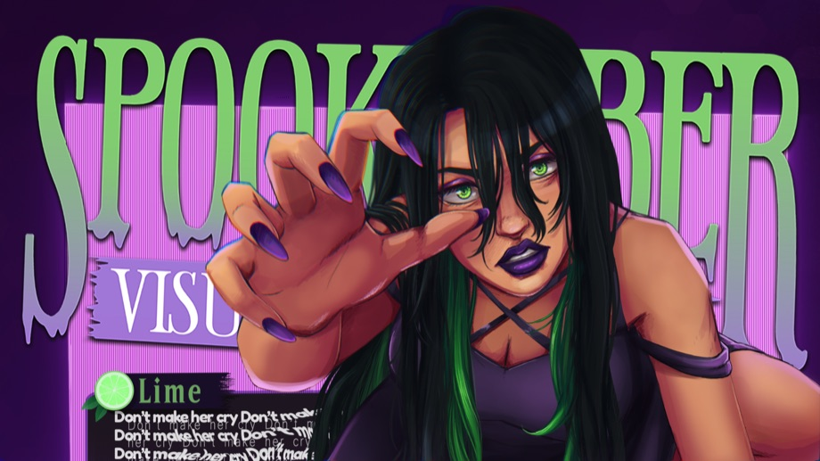
[ GAME JAM ] 3,388 People Signed Up to Make a Halloween Visual Novel in a Month. The Jam's Own Asset Bundle Closes Tuesday.The biggest visual novel jam on itch.io runs a month early on purpose. The Spooktober Visual Novel Jam, now in its eighth year and hosted by Stella of MakeVisualNovels for the Visual Novel Developer Network — the DevTalk Discord community that says it helps over 500 visual novels get made a year — opened for submissions on September 1 and takes them until 04:00 UTC on October 1, so that the finished games are on itch.io for the whole of October, when the organisers invite "itch users, streamers and visual novel lovers" to play and vote on them. Ten days in, the page reads 3,388 joined and 58 entries, with judging running to October 28. The theme is loose — a horror visual novel, a story set on the holiday, monsters, ghosts, costumes, candy, or a creepypasta version of your own earlier work — and the rules are strict about time: concept art, outlines and a logline may exist beforehand, but nothing except the logline can go into the game as-is. What makes it unusual for an itch.io jam is that it is a competition with money on the table. The ranked prizes are $1,000, $750 and $500 plus a $100 Vograce coupon each, and to be eligible a team has to buy a judge pass — the organisers' stated way of keeping the number of entries the judge panel must play to something they can actually finish — and judge pass sales stop on September 15. Around that sit the open prizes anyone can win: $100 each for best voice actor, cinematography and original music, a $300 Vograce coupon for character design, $500 for the best chat-sim, $500 each for the best entry built in Naninovel and in Light.VN, and a $300 University League prize for students at six participating campuses. The same September 15 deadline applies to the Spooktober Visual Novel Jam Asset Bundle, a $30 pack of 72 items from 41 creators — horror music, Ren'Py UI kits and transitions, sprite packs, backgrounds, a dating-sim framework — pitched at roughly $120 of value, with proceeds split between the contributors and the community's running costs, the VNDev Wiki and the University League prize among them. It has raised $1,300 of a $1,500 goal from 42 contributors at an average of $30.95, which is to say almost everyone paid the minimum and a few paid more. A large share of the horror visual novels that fill itch.io every October come out of this jam, and the entries page over the next three weeks is the place to watch them arrive. Source: Spooktober 8th Annual Visual Novel Jam on itch.io · Entries · Asset bundle
-
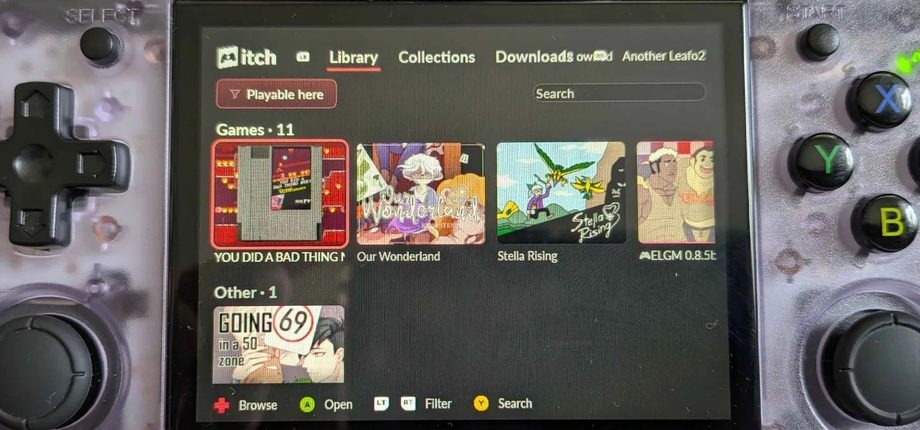
[ ITCH APP ] The itch App Is Getting a Gamepad Interface. Its Creator Is Testing It on a $65 Handheld."Hmm, what do you think of my 'itch donk'?" Leaf Corcoran posted on Tuesday evening, with a photo whose alt text does the explaining: "a janky itch app running on an Anbernic RG35XX H." The RG35XX H is a Linux retro handheld with a 3.5-inch 4:3 screen and a single gigabyte of RAM that sells for around $65, which is to say a device the itch app has no business running on — and the interesting part of the picture is not that it does but what it is showing. The Library tab has a "Playable here" filter switched on, eleven games and one "other" item laid out as cover tiles, and a bar along the bottom of the screen that the shipping app does not have: D-pad to browse, A to open, the triggers to filter, Y to search. That is a controller-native library, and it arrives ten days after the same account's Steam Shortcuts tease — "make your itch games show up in Steam," 1,077 likes — became v26.20.0 on September 2, with the stated goal of playing itch games on a Steam Deck or in Big Picture "without having to change apps." The two ideas point the same direction. Two smaller threads from the week fill in the rest. A Windows user whose Steam Shortcuts button threw an error turned out to have 17 numbered folders in Steam's userdata directory and no "MostRecent" line in its login file, and Corcoran's reply on Tuesday was that the next version handles it: "if there's an ambiguous profile then a profile selector appears." And on Linux, where the app's Flathub package has been community-maintained since 2024 and counts 159,029 installs, Corcoran got push permission to the Flathub repository on September 4 — "We are working on it" — and 26.20.0 went live there within the day. His accompanying fix for the app's tray icon did not: the Flathub linter refuses to let an app own a system-tray bus name that isn't under its own ID, the test build failed three times, and the volunteer maintainer, Doomsdayrs, merged the version bump and left the rest open with "way over my head with this." No date for the next app version; the last three shipped a month apart. Later that evening someone asked the obvious question — "is this some kind of itch equivalent of steam big picture?" — and the answer was "Yes actually." The app is already split into an Electron front-end and the butlerd back-end, Corcoran explained, so he has "been messing around with an alternate front-end" and realised it "could probably work on a low spec linux handheld." The caveat is in the same reply: he hasn't "actually tried to figure out how to run any games" on it yet. Source: Leaf Corcoran on Bluesky · Big Picture reply · Profile-selector reply · v26.20.0 release post · Flathub pull request · itch on Flathub
-
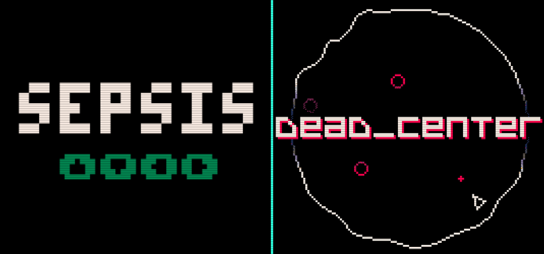
[ GAME JAM ] The Canabalt Creator Just Shipped a 1,023-Byte Game. The Jam That Asked for It Has Three Weeks Left."neeeewwwww ggaaammmeee," Adam Saltsman posted on Saturday, "oh yuck this one is callled SEPSIS." Sepsis 1K is exactly what the name suggests — you blast green blobs with a laser whose range is, in the author's words, "pretty bad," and eventually get "Gobbled By Orbs" — and its compressed PICO-8 cartridge weighs 1,023 bytes, one under the limit. The limit belongs to PICO-1K Jam 2026, the sixth annual edition of Paul Nicholas's itch.io-hosted sizecoding jam, which opened September 1 and takes entries until September 30. The rule is a single sentence: the entire thing, game or demo or tool, must fit in 1,024 compressed bytes of PICO-8 or Picotron code, with no built-in sprites, maps or sound data allowed — anything on screen has to be generated by the code you submit. No theme, no ranking, no prize, multiple entries welcome, and the free browser Education Edition of PICO-8 is enough to take part. As of Tuesday the page reads 85 joined and 24 entries, which understates how the jam is landing: mors's dead_center — "you can only shoot to the dead center. don't get hit by your own bullet like a fool" — has drawn 560 likes and 130 reposts on Bluesky, sits at 4.7 stars from 17 ratings, and ships in 1,021 bytes with Windows, macOS, Linux and Raspberry Pi builds alongside the cart. The comments have worked out the design already: the enemies are barely a threat, and the whole game is dodging your own missed shots as they come back through the middle. Saltsman credits dodge1k by davemakes, the Mixolumia developer, who squeezed "a small version of an old idea of mine" into 999 bytes on day two; SkyBerron has entered six games on their own, and the list runs from a 1K wave simulator to a pinball table to Fox & Clocks & Blocks in a Box. There is a lineage here that the jam's own resources page acknowledges: it links "the original #TweetJam thread on the BBS, started by AdamAtomic" — Saltsman's handle. Canabalt's creator and Finji's co-founder started this lineage roughly a decade ago, and has now come back to enter a jam descended from it. Source: PICO-1K Jam 2026 on itch.io · Entries · Sepsis 1K · Saltsman on Bluesky · dead_center · mors on Bluesky
-
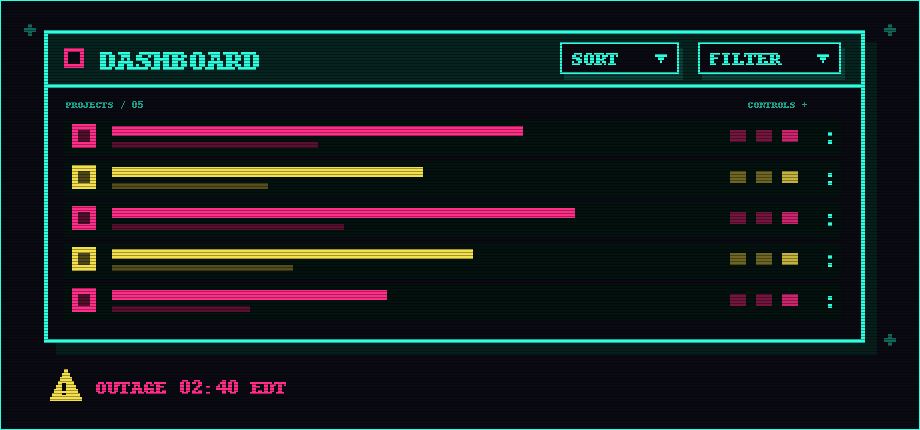
[ PLATFORM ] itch.io Went Down Friday Morning. By Friday Evening the Dashboard Could Sort and Filter.Two itch.io stories landed on September 4, and they are more connected than they look. The first is the bad one. From around 2:40 a.m. Eastern, reports of the site being unreachable started piling up on Downdetector, "ItchIoDown" began circulating, and Instatus's independent tracker logged 35 separate outage reports across its 12-hour chart — a sustained morning of downtime, not a blip, on a platform that now hosts over a million products. itch.io acknowledged it in a post through Downdetector, pointing people to its live outage dashboard, which is as official as it gets: the company has no status page. When developers asked for one after last year's DDoS-driven outage, an admin's answer on the forum was "Discord, Twitter, and Bluesky are the only places we post off-site status updates like that." The site was back by the afternoon. The second story is the good one, and it went out at 20:13 UTC the same day, in the house style: "What's this?! You can now sort AND filter projects on your dashboard? (And the 'New project' button is on top)." For anyone with a few years of drafts, jam builds and restricted pages on one account, this is the most-requested quality of life change the creator side has had in a long while — 286 likes and 37 reposts within the day, and the replies are the useful part. Asked for a grid view, Leaf Corcoran came back with "what do you have in mind? A dense way to show all your projects?" Asked about the bots that comment "New update of the game here:" with a malicious link, the official account was frank: "Sorry, it's a never-ending battle dealing with these scammers. We're working on it." And two days earlier, a player wanting to filter their own library by tag got the explanation for why the buyer side lags the creator side — "library code on the website has a lot of legacy code that needs to be cleaned up before we can add filters," with title search in the app's search bar offered as the interim answer. Source: itch.io on Bluesky · IBTimes on the outage · Forum thread on status updates
-
 [ BUNDLE ]
Games for Scholarships Adds $55 in a Day — Ten Days Left, $506 a Day Needed
[ BUNDLE ]
Games for Scholarships Adds $55 in a Day — Ten Days Left, $506 a Day Needed
Organizer jesthehuman's back-to-school bundle collects everything submitted to the Games for Scholarships jam — 365 entries across video games, browser games and tabletop RPGs, made between July 13 and August 10 under a jam policy that barred discriminatory and AI-generated material. The resulting DRM-free package is 324 items from 159 creators for a $10 minimum, against a regular value of roughly $681. Every dollar goes to Games for Change, funding scholarships for underserved youth in the G4C Student Challenge, the nonprofit's global design competition for students aged 10 to 25. A week after the original $10,000 target fell and the organiser doubled the post to $20,000, the page reads $14,943.57 raised, 74% funded, from 1,239 contributors averaging $12.06 each with a $75 top contribution. The day since our last check added $55 and five backers — level with the $60 of the day before, which makes two days running at the campaign's lowest rate, and a long way from the $600-a-day shape of the first week, when the $704 bump on September 1 marked the last of the back-to-school traffic. The campaign closes 06:59 UTC on September 21 — ten days — with $5,056 still to find, or roughly $506 a day against a run rate now around a ninth of that. The original goal is long since banked; what is at stake now is only the doubled one, and on current form it will finish around $15,500 unless something outside the bundle page moves it. Source: itch.io bundle page · Jam page
> INDIE SCENE
-
[ CROWDFUNDING ]
Double Fine's Backers Picked Four Prototypes. The Fortnight Started Yesterday.
The vote is in and the jam is on. Double Fine left Microsoft this summer, cut 23 staff in July, and went straight back to the thing that funded Broken Age in 2012: a Kickstarter, launched August 31 with documentary partners 2 Player Productions, not for a game but for Amnesia Fortnight, the studio's old internal ritual in which everyone drops what they're doing and builds prototypes for two weeks. Twenty-six staff pitches went up as 30-second videos, and 5,852 backers who had put in $496,159 against a $400,000 goal by the end of the first week were asked to pick a top three. Voting closed on September 6, the last day of PAX West, and the studio's post the same evening names the four that made it: Architactics, pitched by Asif Siddiky; Bard Crawl, by Jared Mills; Plot Armor, by Lauren Scott; and Uprise, by Jolie Menzel. No vote counts were published. Development started Wednesday, September 9, and runs to the 23rd, with the studio streaming every day and sitting the four leads down on camera so backers can watch the prototypes take shape — because there is a second vote at the end, and it is the one that matters. Demos go out to backers, one of the four gets extra polish time, and it ships as a small game under the studio's new sub-label, Double Fine Action Labs, in the same slot as the recently announced Thank You Bus Driver. The Kickstarter itself stays open until September 30. The precedent is what makes the format credible: Costume Quest, Stacking and Iron Brigade all started life as Amnesia Fortnight prototypes. The stretch goal is the joke it sounds like — Brütal Legend 2 at $100 million — but the underlying move is serious: a 26-year-old studio, newly without a platform holder behind it, using crowdfunding less for the money than to find out what its audience wants before it commits a team. Source: Double Fine — the four winners · Kickstarter · Double Fine — day-one post and timeline · Nintendo Life
-
 [ PUBLISHING ]
An Indie Studio Made a Hit, Then Turned Itself Into a Publisher — Cheques Under $500k Only
[ PUBLISHING ]
An Indie Studio Made a Hit, Then Turned Itself Into a Publisher — Cheques Under $500k Only
The usual next step after an indie studio lands a breakout is a bigger studio. Aggro Crab — the Seattle team behind Another Crab's Treasure and, with Landfall, the co-op climbing phenomenon PEAK — has instead opened a publishing label and started handing the money out. Head of publishing Corey Warning puts the reasoning plainly: "PEAK's success put us in a unique position…we were interested in growing our catalog." The terms are where it gets interesting, because they are deliberately small. Aggro Crab is taking submissions for projects that need $500,000 or less and can be finished inside two years — the bracket most publishers have spent the last three years abandoning as too small to bother with — and it says outright that it will not consider anything using generative AI. What it wants is stylised, high-intensity games with an attitude, which is to say more of what it already makes, with feedback offered from the position of a studio that still ships its own games. The first project is Rebounder, from developer ThirtyThree: a precision platformer about a roughneck hired to haul cargo across a hazardous lunar worksite, where you move by grabbing, throwing and bouncing off alien plants and creatures, chaining trick shots, ricochets and wall slides. It takes its cues from speedrunning and kaizo — instant respawns, unlimited attempts — across more than 500 hand-crafted screens in six chapters, and it looks like vintage science-fiction comics rendered through the printing errors: Ben Day dots, ink bleed, misregistration. ThirtyThree co-founder Logan Gilmour on the arrangement: "It's been awesome working with Aggro Crab. They totally understand our vision." A new playable demo ran at Aggro Crab's PAX West booth; the game is Windows, Steam, 2027. Source: Noisy Pixel · Console Creatures · Steam
-
 [ RELEASE DATE ]
Eight Years After Its Kickstarter, an 800,000-Word Vampire RPG Finally Has a Date
[ RELEASE DATE ]
Eight Years After Its Kickstarter, an 800,000-Word Vampire RPG Finally Has a Date
Nighthawks has a release date: September 22, on Steam and GOG, with native Windows, macOS and Linux builds. That sentence has been a long time coming. Nearly 4,000 backers put $136,128 into the project on Kickstarter; it has been in development at The Curiosity Engine ever since, and it now arrives published by Wadjet Eye Games, the adventure-game specialist behind Unavowed and Old Skies, with founder Dave Gilbert producing. The writer is Richard Cobbett, whose credits are Failbetter's Sunless Sea and Sunless Skies, and the art is by Ben Chandler; the engine is Godot with the narrative running on ink. The premise is a vampire story that skips the masquerade — the secret is out, the undead are public, and you are six months into your unlife, newly arrived in the one city on the continent that has publicly promised vampires a second chance. What you do with that is build a nightclub empire out of fear, seduction and supernatural gifts (Mesmerism, Natural Dominion, Tenebrous Form), across two years of in-game time, with ten recruitable companions and a cast of 80-plus fully voiced characters. The number that explains the eight years is 800,000 words. For scale, that is roughly three times the released build of most commercial visual novels this site has covered, in a genre where text is the entire product. Source: GamingOnLinux · Rue Morgue · Steam
> INDIE GAME RELEASES — SEPTEMBER 2026
-
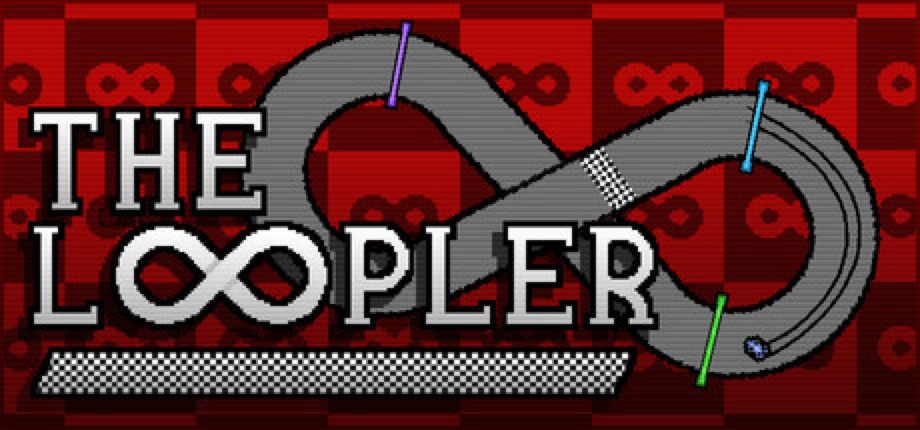
SEP 11 The Loopler — OUT TODAYA slot car, a figure-eight, and a number that goes up. Solo developer Mheep's The Loopler, co-published with Zero Percent, launches on Steam today after slipping from a Q1 window, and it is the idle-roguelite-deckbuilder hybrid in its purest form: a car drives a looping track on its own, every lap scores points toward a round target, and your job is to pick cards, place gates on the track — 14-plus of them, each a synergy trigger — and collect charms so the loops pay out more, then spend the gold on permanent upgrades between runs. Four-plus cars with their own effects, five-plus tracks, 30-plus upgrades, five difficulty modes, achievements and daily leaderboards; the store page's own pitch is "settle into the loop as numbers go up and dopamine fills your brain," which is at least honest about the genre. The demo went up on February 16 on both Steam and itch.io and sits at Very Positive, 303 of 332 — a big number for a solo project. Windows, macOS and Linux, 11 languages, full controller support plus mouse-only and touch-only options. No price on the Steam page as of this morning. Steam · Demo · Demo on itch.io · Games Press announcement
-
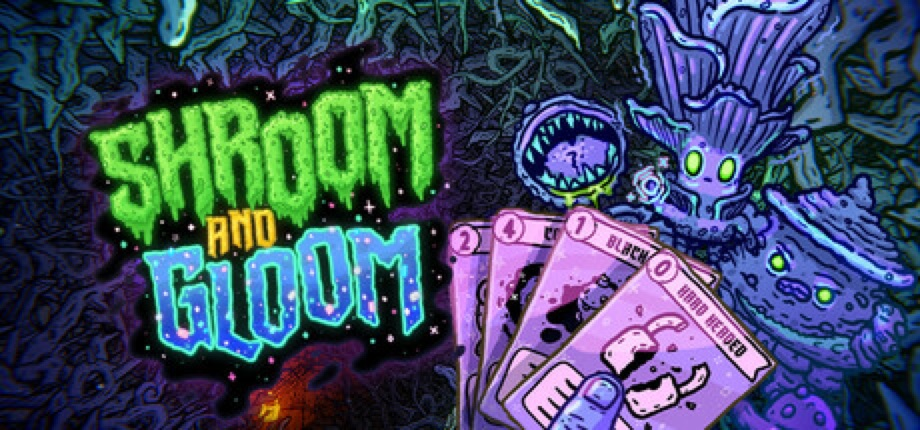
SEP 10 Shroom and Gloom — EARLY ACCESSThe most-wishlisted indie of the week is a deckbuilder where every enemy is edible. Team Lazerbeam's Shroom and Gloom, published by Devolver Digital, went into Steam Early Access on September 10 at $14.99 — no launch discount, and the studio says the price will not change at 1.0. It is a first-person dungeon crawl run by two decks: an Explore deck to reveal, search, break, unlock and ignite your way through hand-drawn caves, and a Combat deck to hack, roast and eat the fungal monstrosities that live in them, with cooking as the healing system — skewer and season a dead enemy to restore health, or drop it in a pot for a run-altering soup. Cards can be grown and modified without a ceiling, which is where the promised "mega-combos" come from. The Cape Town studio started it as a 7-day FPS jam prototype in 2021, put a free prototype on itch.io in September 2024 — still there, rated 4.8 stars from 324 ratings — and the Steam demo that followed is now Overwhelmingly Positive at 1,102 of 1,138 reviews, past 100,000 downloads, with the game itself over 200,000 wishlists. What ships now: two pathways with distinct characters and about 300 cards each, plus quests, synergies and unlocks; the plan for a 12-to-24-month Early Access is a third pathway, new character classes and more quests. Launch-day reception: Very Positive, 100 of 108. Windows and macOS, English and Simplified Chinese only, 14 achievements. Steam · Prototype on itch.io · Gematsu · gamer.org on the demo
-
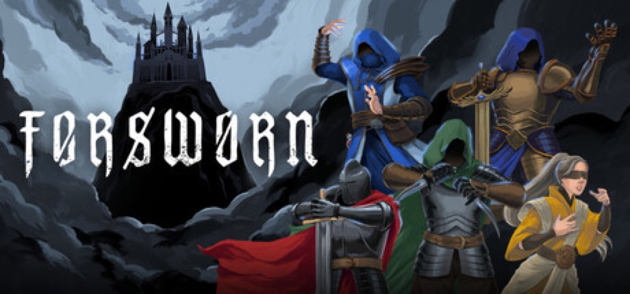
SEP 10 Forsworn — OUT NOWForsworn is the Divinity: Original Sin combat system with everything else cut away, and it took one developer three years. Resummon Studios' Dat Le says he started it as a hobby project because he "couldn't find similar games that focused purely on this kind of combat" — gridless movement, an action-point economy — and it launched on Steam on September 10 at $15.99, cut 20% to $12.79 for launch. The shape is a turn-based tactics roguelite: six heroes with three subclasses each, more than 150 items and 200 abilities to stack into a party that can, per the store page, "slay gods," with Soul Shards carried out of each defeat to make the next run stronger. There are two modes, a Roguelike Adventure and an Endless Arena, five difficulties layering enemy modifiers and map-wide trials, and online co-op for three, where everyone takes their turn at the same time so the fights stay brisk. Windows and Linux, Steam Deck Playable, ten languages including Japanese, Korean and Simplified Chinese, full controller support. It is early: six Steam reviews, all positive, against a demo at 38 of 45. Steam · Demo · Games Press release · GamingOnLinux · RPGamer
-
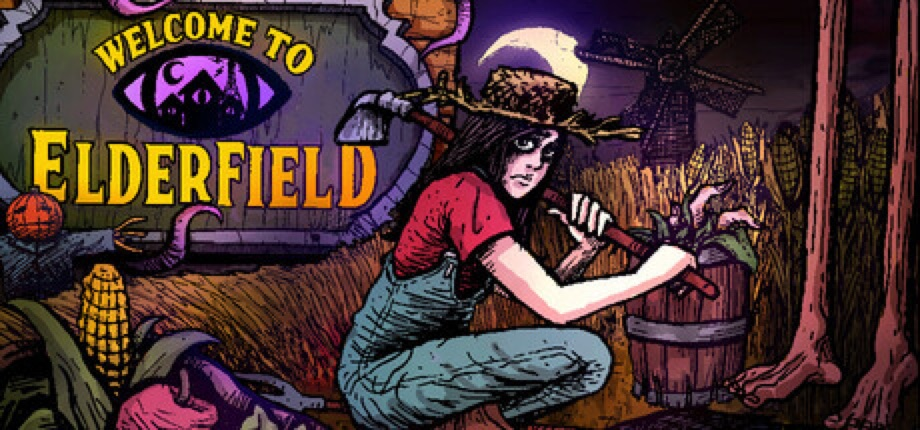
SEP 10 Welcome to Elderfield — OUT NOWThe farming sim where the crops include teeth and eyeballs launched on Steam on September 10. Chris Cote's Welcome to Elderfield, published by Kwalee, is a cozy horror RPG in the Stardew shape — plant, water, fish, mine, cook, decorate the house, befriend or marry the townsfolk — set in a town where eldritch beings watch over you, the local news gets stranger by the day, and the things from the woods sometimes wander onto the farm. The art is hand-drawn and horror-manga inspired, the soundtrack is dark lo-fi from the composer Dated, the combat is turn-based and item-driven, and the first dungeon is the local mall. There is a "cozy" difficulty for people who want the harvest without the suffering, and the store page's own feature list ends with "die in your sleep." The reason to pay attention is the demo, which has been up for months and sits at Overwhelmingly Positive — 618 of 649 reviews, 95% — which for a one-developer project is the kind of number publishers sign on the strength of. Windows only, seven languages including Simplified Chinese and Brazilian Portuguese, full controller support, achievements, Steam Cloud. $17.99, cut 10% to $16.19 for launch, and the first day's reviews are unanimous: 143 of 143 positive. Steam · Demo · Bloody Disgusting · Tech Times on the demo
-
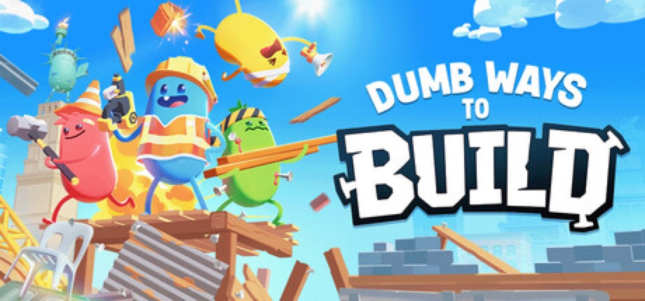
SEP 10 Dumb Ways to Build — OUT NOWThe Melbourne train-safety campaign that became a mobile franchise now has a Steam co-op game. Dumb Ways to Build, developed and published by the Dumb Ways to Die team, went live on September 10 on Steam, PlayStation 5 and Xbox Series X|S, with cross-platform play across all three, at $7.99. It is a physics-based builder in the Human Fall Flat line: up to four players are hired by "Dumbville's least reputable construction company," grab and throw anything not bolted down, nail-gun together sketchy bridges, ramps and platforms, and try to finish the job before the job finishes them. The store page's pitch is honest about where the fun is meant to come from — "your co-workers are the real occupational hazard," the sledgehammer works on steel beams and on friends — and there is a solo mode for people without friends to launch off a roof. Fifteen languages, including Japanese, Korean, both Chinese scripts, Turkish and Ukrainian; full controller support; achievements. The under-$8 price is the bet: a brand most people know from a song, at the cost of a lunch, in the same week as Valheim 1.0. Day-one reception is Mostly Positive, 29 of 38. Steam · Official page · GamingOnLinux · Tech Times
-
SEP 10 Hazard Pay — OUT NOW
A Sokoban where the boxes are evidence. Smitner Studio's Hazard Pay, co-published with Numskull Games, launched September 10 on Steam, PlayStation 5 and Nintendo Switch, and its pitch is delivered in the voice of the employer: "Take the money, do the job, don't ask questions." It is 1982, a Cold War research facility has had a containment breach, and you are the contractor sent in to mop the floors, collect the scattered documents, push the ███████ into the chemical barrels and leave nothing behind, not even footsteps — with the failed experiments, PRS-86 and something called The Collector, still loose in the halls. Each site is a compact block-pushing puzzle with moving parts; every move is counted and your final step count goes on a global leaderboard, so the game is playable at your own pace and then replayable against everyone else's. There are narrative choices and multiple endings about how much truth gets hidden. Windows, macOS and Linux; eight languages including Japanese and both Chinese scripts; full controller support; achievements; no timed input required. $16.99, cut 20% to $13.59 for launch; the first ten Steam reviews are all positive. Steam · Demo · Gematsu · Numskull Games
-
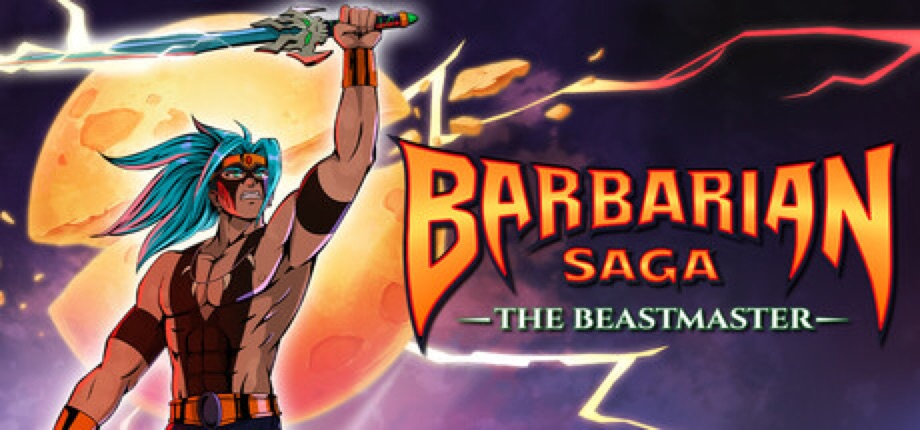
SEP 9 Barbarian Saga: The Beastmaster — OUT NOWDormidin Studio's hand-drawn 2D Metroidvania launched September 9 on Steam, PlayStation 5, Xbox Series X|S and Nintendo Switch, published by Selecta Play, with boxed editions on PS5 and Switch at retail — unusual for a game this size. You are the last Beastmaster in Arborea, a land where the new king and the Sacred Kingdom have started a war against non-humans, and you fight with the Heart-Eater, a sword that absorbs the souls of creatures so you can take their forms and open the map's locked routes. Around the exploration sits a ritual necklace of fangs, amulets and roots that reshape attacks, vitality and mana, and a set of arenas that switch to a close camera and fighting-game energy bars for one-on-one duels; there is more than one ending. The launch-day reception is small and split: five of six Steam reviews positive, with AllKeyShop's verdict — "gorgeous 2D art but mercilessly stiff combat" — a fair summary of the demo chatter. 34 achievements, five languages, Windows only. $14.99, cut 10% to $13.49 for launch. Steam · Capsule Computers · AllKeyShop
-
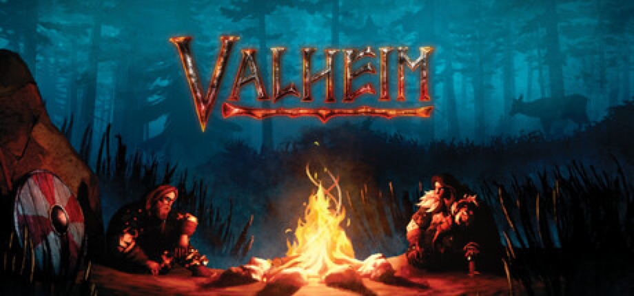
SEP 9 Valheim — 1.0 LAUNCHFive years, seven months and seven days after five people in Skövde put a Viking survival game into Early Access, Iron Gate is calling it finished. Valheim 1.0 went live on September 9 at 6 a.m. Pacific, 3 p.m. in Central Europe, as a free update for everyone who owns it — and at 17 million copies sold, that is a lot of everyone. The headline is the Deep North, the frozen final biome the roadmap has promised since 2021: giant Gammeltrolls that petrify into stone when killed ("the trolls from the beginning of the game, but much older," senior artist Lisa Kolfjord told GamesBeat), two new dungeons in the Winding Tunnels and the Gates of Mörkhalla, seals, a rideable moose, new armour sets, a blood-thunder sword, a frost axe and mage weapons, plus an unlimited-use grappling hook for the vertical terrain. Existing worlds and characters carry over, with the caveat that the new biome only generates in areas you have not already explored. The launch also puts the game on PlayStation 5 and Nintendo Switch 2 for the first time alongside PC, Mac, Linux and Xbox, with full crossplay across all of them. Two numbers to note. The team is eight people now, up from five, and the price rises from $19.99 to $29.99 with 1.0 — Steam is already showing the new figure — the studio's rationale being that a complete game is not an Early Access one. The download is around 4.3 GB. Steam reception a day after launch: Very Positive, 94% of 543,608 reviews, and IGN's 10/10 has it at 90 on Metacritic. Coffee Stain publishes. Steam · Iron Gate announcement · GamesBeat interview · Game Rant on launch times
-
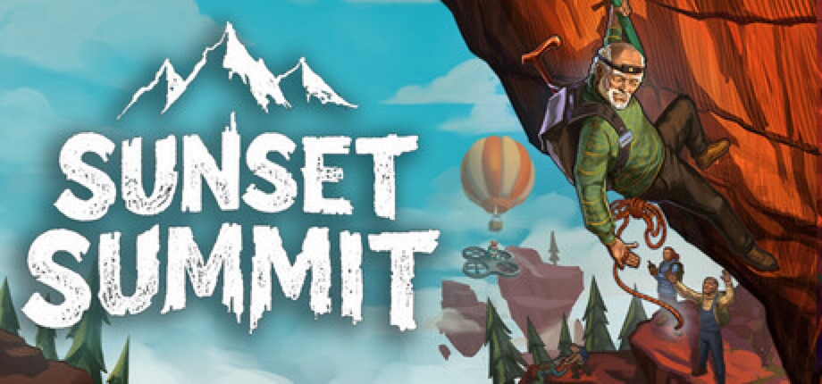
SEP 9 Sunset Summit — OUT NOWThe brothers who made DEVOUR, a co-op horror game that went on to sell more than seven million copies, have made a co-op game about old people climbing mountains, and its entire design is a rebuttal to the rage-climber genre it borrows from. Joe and Andrew Fender's Sunset Summit, published by Future Friends Games, launched on Steam on September 9 after slipping from an August 21 date. Up to eight players take a group hike up floating sky islands and try to reach the top before sunset, with ice axes for the climbing, ropes and item-delivery drones for helping stragglers, and pogo sticks, booster pills and umbrellas for when sensible tools run out. The store page's first heading is "Fun over frustration": checkpoints are frequent, a fall respawns you instantly, and the pitch is that you climb, fall and try again rather than lose forty minutes of progress. There are 16 handcrafted routes across four islands at roughly an hour each, harder difficulties on top, proximity chat and walkie-talkies to keep the group in contact, offline solo play, a realistic in-game camera to stop and take photographs with, and a "100% handcrafted, no AI" line covering every asset, route, character and piece of music. Windows only, 12 languages, full controller support. A demo has been up since June. The price turned out to be the surprise: $4.99, cut 38% to $3.09 for launch, for an eight-player co-op game from a studio that sold seven million copies of its last one. Reception two days in is Positive, 26 of 30 reviews. Steam · Demo · GameGrin on the original date · Game-News on the delay
Release list sources: Green Man Gaming — Indie Game Release Round-Up, September 2026, GameGrin — 22 Hidden Gems Launching on Steam This Week (7th–13th of September 2026), RPGamer — New Release Round-Up (September 10, 2026), GamingOnLinux — daily indie coverage, Steam — new releases by date, plus per-entry Steam / press links above. Game artwork: official Steam store assets, press kits and site key art, © their respective developers and publishers.
> ABOUT
CyberCycho is a curated digest of itch.io.